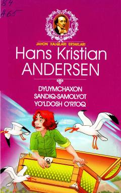

DSHans Kristian Andersenning eng mashhur ertaklari jamlangan bolalar uchun ajoyib to'plam.
Ushbu kitob jahonga mashhur yozuvchi Hans Kristian Andersenning bolalar uchun yozilgan eng sara ertaklarini o'z ichiga oladi. To'plamdan 'Dyuymchaxon', 'Sandiq-samolyot' va 'Yo'ldosh o'rtoq' kabi mashhur asarlar o'rin olgan.